Logic and Proof
21 Combinatorics
Combinatorics is the art of counting without counting. It is a
fundamental mathematical task to determine how many things there are
in a given collection, and when the collection is large, it can be
tedious or infeasible to count the elements individually. Moreover,
when the collection is described in terms of a changing parameter
(say, a natural number,  ), we would like a formula that tells us
how the number of objects depends on that parameter. In this chapter
we will set up a foundation for achieving this goal, and learn some of
the tricks of the trade.
), we would like a formula that tells us
how the number of objects depends on that parameter. In this chapter
we will set up a foundation for achieving this goal, and learn some of
the tricks of the trade.
21.1 Finite Sets and Cardinality
It will be helpful, for every natural number , to have a canonical
set of elements of size . To that end, we will choose the set
We used the same notation, , to describe equivalence classes with respect to an equivalence relation, but hopefully our intended meaning will always be clear from the context.
A set  of elements is said to be finite if there is a bijection
from to for some . In that case, we would like to say
that has elements, or that the set has cardinality
, and write . But to do so, we need to know that when
is finite, there is a unique with the property above.
of elements is said to be finite if there is a bijection
from to for some . In that case, we would like to say
that has elements, or that the set has cardinality
, and write . But to do so, we need to know that when
is finite, there is a unique with the property above.
Suppose there are bijections from to and . Composing
the inverse of the first bijection with the second, we get a bijection
from to . It seems intuitively clear that this implies  , but our goal is to prove this from the fundamental properties of
sets, functions, and the natural numbers.
, but our goal is to prove this from the fundamental properties of
sets, functions, and the natural numbers.
So suppose, for the sake of contradiction,  . Without loss of
generality, we can assume (why?). In particular, there is an
injective function
. Without loss of
generality, we can assume (why?). In particular, there is an
injective function  from to . Since ,
from to . Since ,  ,
and so we can restrict to get an injective function from
to . The next theorem shows that this cannot happen.
,
and so we can restrict to get an injective function from
to . The next theorem shows that this cannot happen.
Theorem. For any natural number , there is no injective function
from to .
Proof. By induction on . The theorem is clear when  ,
because and . If were an
injective function from to , we would have , which is impossible.
,
because and . If were an
injective function from to , we would have , which is impossible.
So suppose the claim is true for , and suppose is an injective
function from to . We consider two cases.
In the first case, suppose is not in the image of . Then
maps to , and restricting the domain, we have an
injective function from to , contradicting the inductive
hypothesis.
In the second case, there is some such that . The idea is to alter slightly to get an injective function
from to , again contradicting the inductive
hypothesis. If , which is to say it is the last element of
that is mapped to the last element of , we can just
restrict to . The fact that was injective implies that
all the elements in are mapped to .
Otherwise, define by
In other words, we map  to the value that 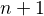 was mapped
to. Since is injective, , and so ,
as required. It is not hard to check that is injective, so we
have the contradiction we were after.
to the value that 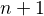 was mapped
to. Since is injective, , and so ,
as required. It is not hard to check that is injective, so we
have the contradiction we were after.
This theorem is known as the "pigeonhole principle." It implies that
if  pigeons inhabit holes, then at least one hole has more
than one pigeon. The principle implies that for every finite set ,
there is a unique such that there is a bijection from to
, and we can define the cardinality of to be that .
pigeons inhabit holes, then at least one hole has more
than one pigeon. The principle implies that for every finite set ,
there is a unique such that there is a bijection from to
, and we can define the cardinality of to be that .
21.2 Counting Principles
Here is a basic counting principle.
Theorem. Let and  be disjoint finite sets. Then .
be disjoint finite sets. Then .
Proof. Suppose and  are
bijections. Define by
are
bijections. Define by
To see that  is surjective, note that every
is surjective, note that every  in
in  can
be written as either for some or for
some . In the first case, , and in the
second case, .
can
be written as either for some or for
some . In the first case, , and in the
second case, .
It is not hard to show that is also injective. Suppose . If  is in , then it is not in the range of 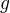, and so
we must have and . Then , the
injectivity of implies that . If is instead in ,
the argument it similar.
is in , then it is not in the range of 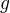, and so
we must have and . Then , the
injectivity of implies that . If is instead in ,
the argument it similar.
The proof only spells out our basic intuitions: if you want to list
all of the elements of , you can list all the elements of
and then all the elements of . And if and have no
elements in common, then to count the elements of , you can
count the elements of and then continue counting the elements of
. Once you are comfortable translating the intuitive argument into a
precise mathematical proof (and mathematicians generally are), you can
use the more intuitive descriptions (and mathematicians generally do).
Here is another basic counting principle:
Theorem. Let and be finite sets. Then .
Notice that this time we are counting the number of ordered pairs  with and . The exercises ask you to give a
detailed proof of this theorem. There are at least two ways to go
about it. The first is to start with bijections and
and describe an explicit bijection . The second is to fix , say, and use induction on
and the previous counting principle. Notice that if
with and . The exercises ask you to give a
detailed proof of this theorem. There are at least two ways to go
about it. The first is to start with bijections and
and describe an explicit bijection . The second is to fix , say, and use induction on
and the previous counting principle. Notice that if  and
and  are any sets and is not in , we have
are any sets and is not in , we have
and the two sets in this union are disjoint.
Just as we have notions of union  and
intersection
and
intersection  for indexed families of sets, it
is useful to have a notion of a product . We can
think of an element
for indexed families of sets, it
is useful to have a notion of a product . We can
think of an element  of this product as a function which, for each
element , returns an element . For example, when
, an element of is just a
triple 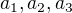 with , , and . This is essentially the same as , up
to the fiddly details as to whether we represent a triple as a
function or with iterated pairing .
of this product as a function which, for each
element , returns an element . For example, when
, an element of is just a
triple 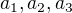 with , , and . This is essentially the same as , up
to the fiddly details as to whether we represent a triple as a
function or with iterated pairing .
Theorem. Let be a finite index set, and let be a family of finite sets. Then:
- If each pair of sets
 , are disjoint, then .
, are disjoint, then . - .
Proof. By induction on , using the previous counting principles.
We can already use these principles to carry out basic calculations.
Example. The dessert menu at a restaurant has four flavors of ice cream, two kinds of cake, and three kinds of pie. How many dessert choices are there?
Solution. , the cardinality of the union of the three disjoint sets.
Example. The menu at a diner has 6 choices of appetizers, 7 choices of entrée, and 5 choices of dessert. How many choices of three-course dinners are there?
Solution. A three-course dinner is a triple consisting of an appetizer, an entrée, and a dessert. There are therefore options.
A special case of the previous counting principles arises when all the
sets have the same size. If has cardinality and each has
cardinality , then the cardinality of  is if the sets are pairwise disjoint, and the cardinality of
is
is if the sets are pairwise disjoint, and the cardinality of
is  .
.
Example. A deck of playing cards has four suits (diamonds, hearts, spades, and clubs) and 13 cards in each suit, for a total of .
Example. A binary string of length is a sequence of many
0's and 1's. We can think of this as an element of
so there are  many binary strings of length .
many binary strings of length .
There is another counting principle that is almost too obvious to
mention: if is a finite set and there is a bijection between
and , then is also finite, and .
Example. Consider the power set of , that is, the collection of
all subsets of . There is a one-to-one
correspondence between subsets and binary strings of length , where
element  of the string is
of the string is  if is in the set and
if is in the set and  otherwise. As a result, we have .
otherwise. As a result, we have .
21.3 Ordered Selections
Let  be a finite set, which we will think of as being a set of
options, such as items on a menu or books that can be selected from a
shelf. We now turn to a family of problems in combinatorics that involves
making repeated selections from that set of options. In each case,
there are finitely many selections, and the order counts: there is a
first choice, a second one, a third one, and so on.
be a finite set, which we will think of as being a set of
options, such as items on a menu or books that can be selected from a
shelf. We now turn to a family of problems in combinatorics that involves
making repeated selections from that set of options. In each case,
there are finitely many selections, and the order counts: there is a
first choice, a second one, a third one, and so on.
In the first variant of the problem, you are allowed to repeat a
choice. For example, if you are choosing 3 flavors from a list of 31
ice cream flavors, you can choose "chocolate, vanilla, chocolate."
This is known as ordered selection with repetition. If you are
making choices from among options in , such a selection is
essentially a tuple , where each is
one of the elements in . In other words, the set of ways of
making selections from with repetition is the set , and
we have seen in the last section that if has cardinality , the
set has cardinality .
Theorem. Let be a set of elements. Then the number of ways of making
selections from with repetition allowed is .
Example. How many three-letter strings (like "xyz," "qqa," …) can be formed using the twenty-six letters of the alphabet?
Solution. We have to make three selections from a set of 26 elements, for a total of possibilities.
Suppose instead we wish to make ordered selections, but we are not
allowed to repeat ourselves. This would arise, from example, if a
museum had 26 paintings in its storeroom, and has to select three of
them to put on display, ordered from left to right along a wall. There
are 26 choices for the first position. Once we have made that choice,
25 remain for the second position, and then 24 remain for the
third. So it seems clear that there are
arrangements overall.
Let us try to frame the problem in mathematical terms. We can think of
an ordered selection of elements from a set without repetition
as being an injective function from to . The element
is the first choice;  is the second choice, which has to
be distinct from ; is the third choice, which has to be
distinct from and ; and so on.
is the second choice, which has to
be distinct from ; is the third choice, which has to be
distinct from and ; and so on.
Theorem. Let and be finite sets, with and , and  . The number of injective functions from
to is
. The number of injective functions from
to is  .
.
Proof. Using induction on , we will show that for every , ,
and , the claim holds. When 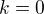 there is only one
injective function, namely the function with empty domain. Suppose
has cardinality , let  be any element of . Then any
injective function from to can be obtained by choosing an
element for the image of , and then choosing an injective
function from to . There are choices of , and since and , there are
choices of the injective
function, by the inductive hypothesis.
be any element of . Then any
injective function from to can be obtained by choosing an
element for the image of , and then choosing an injective
function from to . There are choices of , and since and , there are
choices of the injective
function, by the inductive hypothesis.
Theorem. Let be a finite set, with  . Then the number of
ways of making selections from without repetition allowed is
.
. Then the number of
ways of making selections from without repetition allowed is
.
Proof. This is just a restatement of the previous theorem, where and .
If is a finite set, a bijection from to is also called
a permutation of . The previous theorem shows that if
then the number of permutations of is . This quantity comes up so often that it has a name,
factorial, and a special notation,  . If we think of the
elements of listed in some order, a permutation of is
essentially an ordered selection of elements from without
repetition: we choose where to map the first element, then the second
element, and so on. It is a useful convention to take to be equal
to .
. If we think of the
elements of listed in some order, a permutation of is
essentially an ordered selection of elements from without
repetition: we choose where to map the first element, then the second
element, and so on. It is a useful convention to take to be equal
to .
The more general case where we are choosing only elements from a
set is called a  -permutation of . The theorem above says
that the number of -permutations of an
-permutation of . The theorem above says
that the number of -permutations of an  -element set is equal to
-element set is equal to
 , because if you expand the numerator and denominator
into products and cancel, you get exactly the
, because if you expand the numerator and denominator
into products and cancel, you get exactly the  . This number is often denoted or
, or some similar variant. So we have 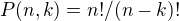. Notice that the expression on the right side of the equality
provides an efficient way of writing the value of , but an
inefficient way of calculating it.
. This number is often denoted or
, or some similar variant. So we have 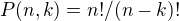. Notice that the expression on the right side of the equality
provides an efficient way of writing the value of , but an
inefficient way of calculating it.
21.4 Combinations and Binomial Coefficients
In the last section, we calculated the number of ways in which a museum could arrange three paintings along a wall, chosen from among 26 paintings in its storeroom. By the final observation in the previous section, we can write this number as .
Suppose now we want to calculate the number of ways that a museum can
choose three paintings from its storeroom to put on display, where we
do not care about the order. In other words, if ,  , and 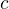 are
paintings, we do not want to distinguish between choosing then
then and choosing then then . When we were arranging
paintings along all wall, it made sense to consider these two
different arrangements, but if we only care about the set of
elements we end up with at the end, the order that we choose them does
not matter.
, and 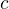 are
paintings, we do not want to distinguish between choosing then
then and choosing then then . When we were arranging
paintings along all wall, it made sense to consider these two
different arrangements, but if we only care about the set of
elements we end up with at the end, the order that we choose them does
not matter.
The problem is that each set of three paintings will be counted multiple times. In fact, each one will be counted six times: there are 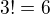 permutations of the set , for example. So to count the number of outcomes we simply need to divide by 6. In other words, the number we want is .
There is nothing special about the numbers 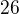 and  . The same
formula holds for what we will call unordered selections of
elements from a set of elements, or $k$-combinations from an
-element set. Our goal is once again to describe the situation in
precise mathematical terms, at which point we will be able to state
the formula as a theorem.
. The same
formula holds for what we will call unordered selections of
elements from a set of elements, or $k$-combinations from an
-element set. Our goal is once again to describe the situation in
precise mathematical terms, at which point we will be able to state
the formula as a theorem.
In fact, describing the situation in more mathematical terms is quite
easy to do. If is a set of elements, an unordered selection of
elements from is just a subset of that has cardinality .
Theorem. Let be any set with cardinality , and let  . Then the number of subsets of of cardinality is
.
. Then the number of subsets of of cardinality is
.
Proof. Let be the set of unordered selections of elements
from , let be the set of permutations of , and let be the set of
ordered selections of elements from . There is a bijection
between and : given any -element subset of , each permutation gives a different ordered
selection.
By the counting principles, we have
so we have .
Example. Someone is going on vacation and wants to choose three outfits from ten in their closet to pack in their suitcase. How many choices do they have?
Solution. .
The number of unordered selections of elements from a set of size
, or, equivalently, the number of -combinations from an
-element set, is typically denoted by , ,
, or something similar. We will use the first notation, because
it is most common. Notice that  for every ; this
makes sense, because there is exactly one subset of any -element
set of cardinality .
for every ; this
makes sense, because there is exactly one subset of any -element
set of cardinality .
Here is one important property of this function.
Theorem. For every and , we have .
Proof. This is an easy calculation:
But it is also easy to see from the combinatorial interpretation:
choosing outfits from to take on vacation is the same task as
choosing outfits to leave home.
Here is another important property.
Theorem. For every and , if , then

Proof. One way to understand this theorem is in terms of the
combinatorial interpretation. Suppose you want to choose  outfits
out of . Set aside one outfit, say, the blue one. Then you have two
choices: you can either choose outfits from the remaining ones,
with possibilities; or you can take the blue one, and
choose outfits from the remaining ones.
outfits
out of . Set aside one outfit, say, the blue one. Then you have two
choices: you can either choose outfits from the remaining ones,
with possibilities; or you can take the blue one, and
choose outfits from the remaining ones.
The theorem can also be proved by direct calculation. We can express the left-hand side of the equation as follows:
Similarly, we can simplify the right-hand side:
Thus the left-hand side and the right-hand side are equal.
For every , we know . The previous
theorem then gives a recipe to compute all the binomial coefficients:
once we have determine for some and every , we can determine the values of 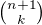 for every using the recipe above. The results can be displayed
graphically in what is known as Pascal's triangle:
Specifically, if we start counting at , the th element of the
th row is equal to .
There is also a connection between and the
polynomials  , namely, that the th coefficient of is exactly . For example, we have
, namely, that the th coefficient of is exactly . For example, we have
For that reason, the values are often called binomial coefficients, and the statement that
is known as the binomial theorem.
There are a couple of ways of seeing why this theorem holds. One is to expand the polynomial,
and notice that the coefficient of the term is equal to
the number of ways of taking the summand in exactly positions,
and in the remaining positions. Another way to prove the
result is to use induction on , and use the identity
. The details are
left as an exercise.
Finally, we have considered ordered selections with and without
repetitions, and unordered selections without repetitions. What about
unordered selections with repetitions? In other words, given a set
with elements, we would like to know how many ways there are
of making choices, where we can choose elements of repeatedly,
but we only care about the number of times each element was chosen,
and not the order. We have the following:
The number of unordered selections of elements from an -element
set, with repetition, is .
A proof of this is outlined in the exercises.
21.5 The Inclusion-Exclusion Principle
Let and be any two subsets of some domain, . Then , and the two sets in the union are
disjoint, so we have . This means . Intuitively, this makes sense: we
can count the elements of 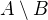 by counting the elements in
, and then subtracting the number of elements that are in both
and .
Similarly, we have , and the two sets on the right-hand side of this equation are disjoint, so we have
If we draw a Venn diagram, this makes sense: to count the elements in
, we can add the number of elements in to the number of
elements in , but then we have to subtract the number of elements
of both.
What happen when there are three sets? To compute ,
we can start by adding the number of elements in each, and then
subtracting the number of elements of , ,
and , each of which have been double-counted. But thinking
about the Venn diagram should help us realize that then we have
over-corrected: each element of  was counted three
times in the original sum, and the subtracted three times. So we need
to add them back in:
was counted three
times in the original sum, and the subtracted three times. So we need
to add them back in:
This generalizes to any number of sets. To state the general result, suppose
the sets are numbered . For each nonempty subset
of , consider . If
is odd (that is, equal to 1, 3, 5, ) we want to add the
cardinality of the intersection; if it is even we want to subtract it. This
recipe is expressed compactly by the following formula:
You are invited to try proving this as an exercise, if you are ambitious. The following example illustrates its use:
Example. Among a group of college Freshmen, 30 are taking Logic, 25 are taking History, and 20 are taking French. Moreover, 11 are taking Logic and History, 10 are taking Logic and French, 7 are taking History and French, and 3 are taking all three. How many students are taking at least one of the three classes?
Solution. Letting  , , and 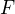 denote the sets of students
taking Logic, History, and French, respectively, we have
, , and 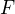 denote the sets of students
taking Logic, History, and French, respectively, we have
21.6 Exercises
Suppose that, at a party, every two people either know each other or don't. In other words, "
 knows
knows  " is symmetric. Also, let
us ignore the complex question of whether we always know ourselves
by restricting attention to the relation between distinct people;
in other words, for this problem, take " knows " to be
antisymmetric as well.
" is symmetric. Also, let
us ignore the complex question of whether we always know ourselves
by restricting attention to the relation between distinct people;
in other words, for this problem, take " knows " to be
antisymmetric as well.
Use the pigeonhole principle (and an additional insight) to show that there must be two people who know exactly the same number of people.
- Show that in any set of integers, two of them are
equivalent modulo .
- Spell out in detail a proof of the second counting principle in Section 21.1.
An ice cream parlor has 31 flavors of ice cream.
a. Determine how many three-flavor ice-cream cones are possible, if we care about the order and repetitions are allowed. (So choosing chocolate-chocolate-vanilla scoops, from bottom to top, is different from choosing chocolate-vanilla-chocolate.)
b. Determine how many three flavor ice-cream cones are possible, if we care about the order, but repetitions are not allowed.
c. Determine how many three flavor ice-cream cones are possible, if we don't care about the order, but repetitions are not allowed.
A club of 10 people has to elect a president, vice president, and secretary. How many possibilities are there:
a. if no person can hold more than one office?
b. if anyone can hold any number of those offices?
c. if anyone can hold up to two offices?
d. if the president cannot hold another office, but the vice president and secretary may or may not be the same person?
- How many 7 digit phone numbers are there, if any 7 digits can be used? How many are there is the first digit cannot be 0?
- In a class of 20 kindergarten students, two are twins. How many ways are there of lining up the students, so that the twins are standing together?
- A woman has 8 murder mysteries sitting on her shelf, and wants to take three of them on a vacation. How many ways can she do this?
- In poker, a "full house" is a hand with three of one rank and two of another (for example, three kings and two fives). Determine the number of full houses in poker.
We saw in Section 21.4 that
Replacing by
, whenever , we have
Use this to show, by induction on
, that for every ,
that if is any set of elements, is the number
of subsets of with elements.
How many distinct arrangements are there of the letters in the word MISSISSIPPI?
(Hint: this is tricky. First, suppose all the S's, I's, and P's were painted different colors. Then determine how many distinct arrangements of the letters there would be. In the absence of distinguishing colors, determine how many times each configuration appeared in the first count, and divide by that number.
- Prove the inclusion exclusion principle.
- Use the inclusion exclusion principle to determine the number of integers less than 100 that are divisible by 2, 3, or 5.
Show that the number of unordered selections of
elements
from an -element set is .
Hint: consider . We need to choose some number of 0's, some number of 1's, and so on, so that 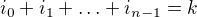. Suppose we assign to each such tuple a the following binary sequence: we write down 0's, then a 1, then , then a 1, then 0's, and so on. The result is a binary sequence of length with exactly
1's,
and such binary sequence arises from a unique tuple in this way.